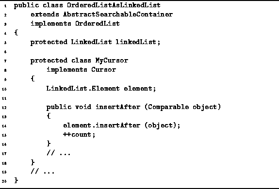

Data Structures and Algorithms
with Object-Oriented Design Patterns in Java
Data Structures and Algorithms
with Object-Oriented Design Patterns in JavaOnce having determined the position of an item in an ordered list, we can make use of that position to insert items into the middle of the list. Two methods are specifically provided for this purpose--insertAfter and insertBefore. Both of these take a single argument--the Comparable object to be inserted into the list.

Program: OrderedListAsLinkedList.MyCursor class insertAfter method.
Program  gives the implementation for the
insertAfter method of the OrderedListAsLinkedList.MyCursor class.
This method simply calls the insertAfter method
provided by the LinkedList class.
Assuming no exceptions are thrown,
the running time for this method is O(1).
gives the implementation for the
insertAfter method of the OrderedListAsLinkedList.MyCursor class.
This method simply calls the insertAfter method
provided by the LinkedList class.
Assuming no exceptions are thrown,
the running time for this method is O(1).
The implementation of insertBefore is not shown--its similarity with insertAfter should be obvious. Since it must call the insertBefore method provided by the LinkedList class, we expect the worst case running time to be O(n), where .
 Copyright © 1998 by Bruno R. Preiss, P.Eng. All rights reserved.
Copyright © 1998 by Bruno R. Preiss, P.Eng. All rights reserved.